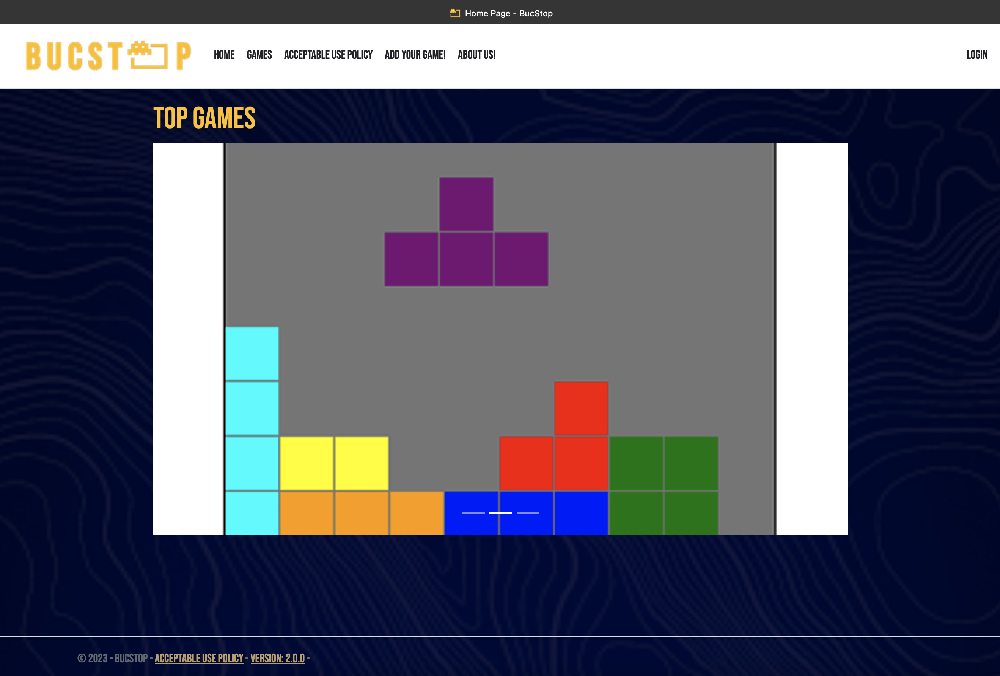
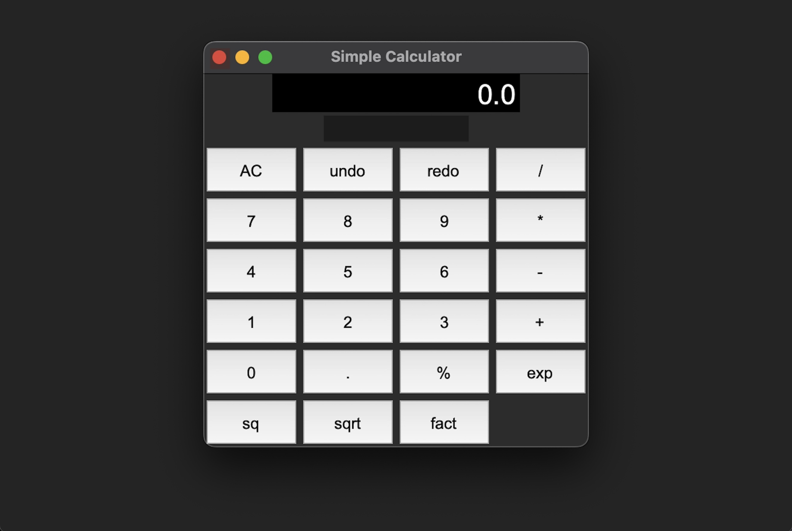
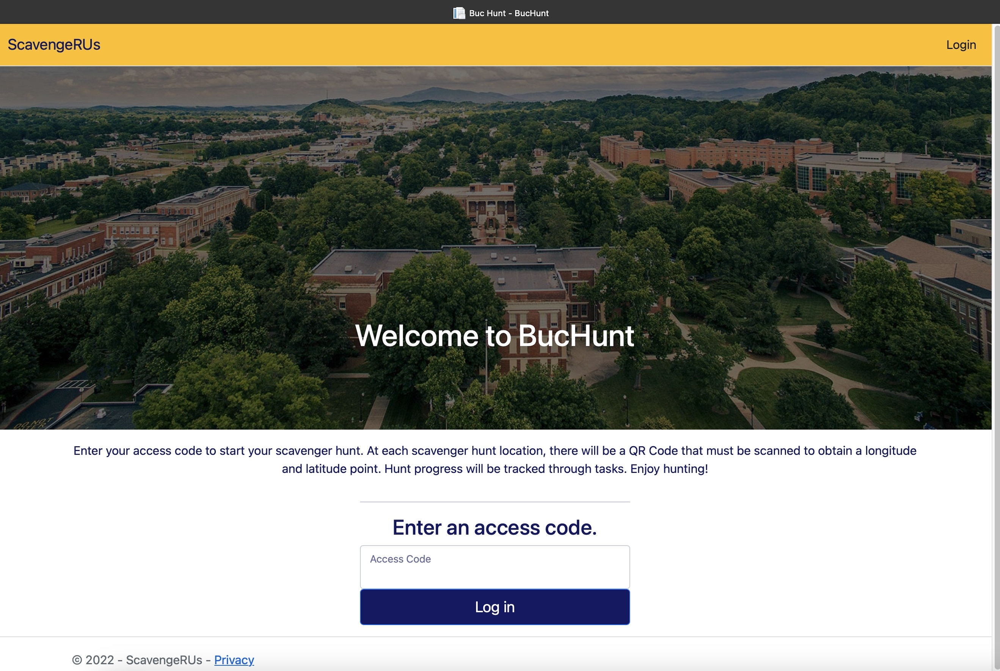
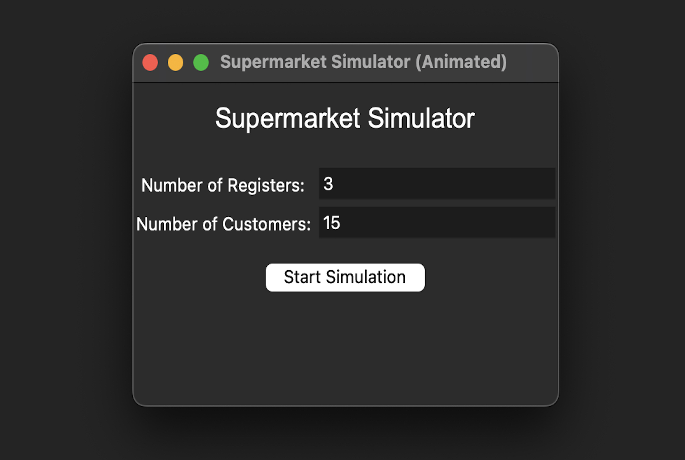
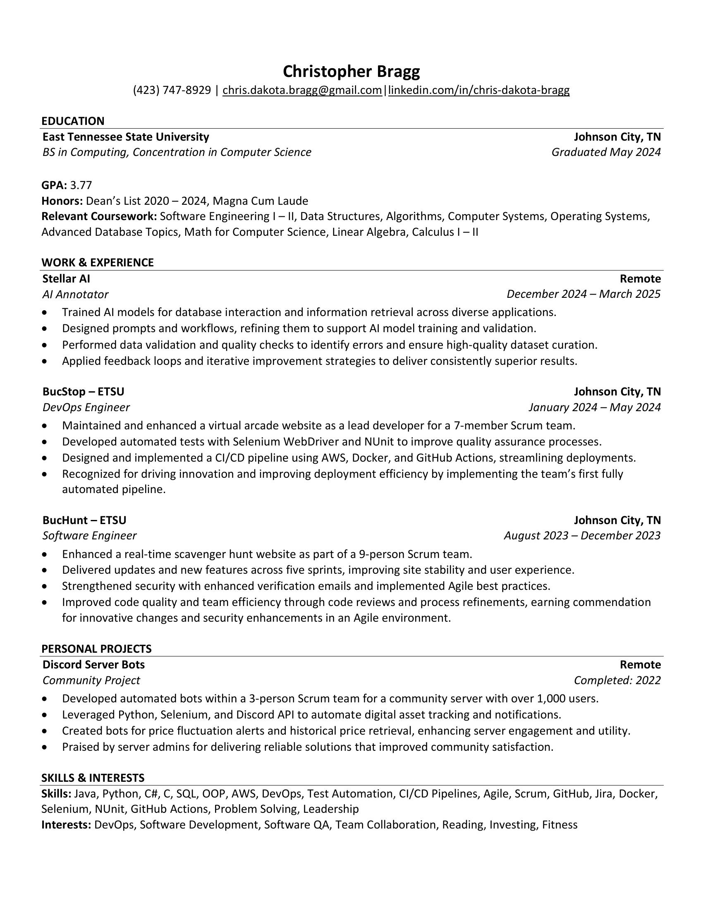

Featured Project: BucStop
A virtual arcade web application built with C# and .NET
as part of a 7-member Scrum team at East Tennessee
State University. I served as DevOps Engineer,
implementing a fully automated CI/CD pipeline with
AWS, Docker, and GitHub Actions, significantly improving
deployment efficiency. Additionally, I developed
automated test suites using Selenium WebDriver and NUnit
to enhance code quality and application stability.
Key Tools & Technologies: C#, .NET, HTML, JavaScript, CSS,
Microservices, Selenium WebDriver, NUnit,
AWS, Docker, GitHub Actions, GitHub, Jira, Agile, Scrum.


A Python calculator built with Tkinter, featuring a clean, modern interface with
advanced math functions (modulus, exponents, square root, factorials).
Includes variable storage with JSON file I/O for saving and loading custom variables across sessions.
Demonstrates proficiency in Python, GUI design, data structures, and state management.
application architecture, GUI design, and state persistence.
Key Tools & Technologies: Python, Tkinter, JSON File I/O,
Object-Oriented Programming (OOP), Data Structures (Stacks for Undo/Redo), GitHub, Git.

A real-time scavenger hunt web platform developed
in a 9-member Scrum team at East Tennessee State
University using C# and .NET. As a Software Engineer,
I worked on feature development, API integration,
and backend logic, delivering consistent updates
over multiple sprints. I also enhanced site performance,
implemented security features like email verification,
and contributed to peer code reviews to maintain project quality.
Key Tools & Technologies: C#, .NET, JavaScript, CSS, HTML,
API Integration, GitHub, Jira, Agile, Scrum.

A Python supermarket simulator featuring both a fully automated terminal simulation
and an interactive Tkinter GUI with live, animated customer queues.
Rebuilt from the original C# data structures project,
this version demonstrates clean application architecture,
object-oriented design, and real-time queue visualization.
Includes modular class structures for customers, registers,
and supermarket operations with randomized cart generation
and FIFO queue logic.
Key Tools & Technologies: Python, Tkinter,
Object-Oriented Programming (OOP), Data Structures (Queues),
GUI Animation, GitHub, Git.

Explore my background in development, key technical skills, and how I contribute to engineering teams.